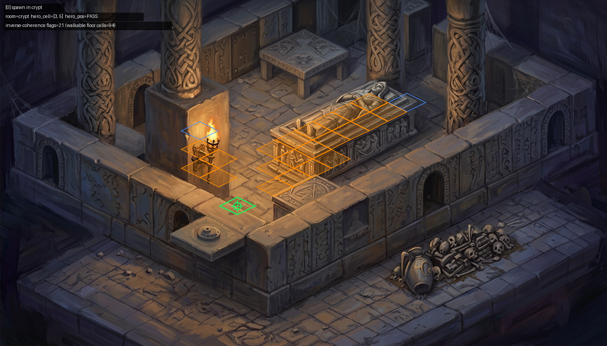
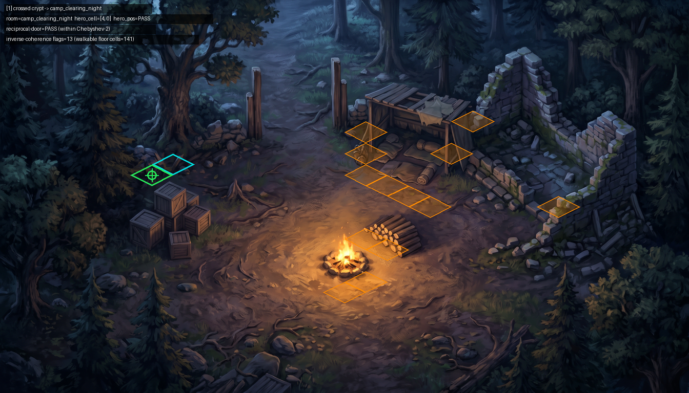
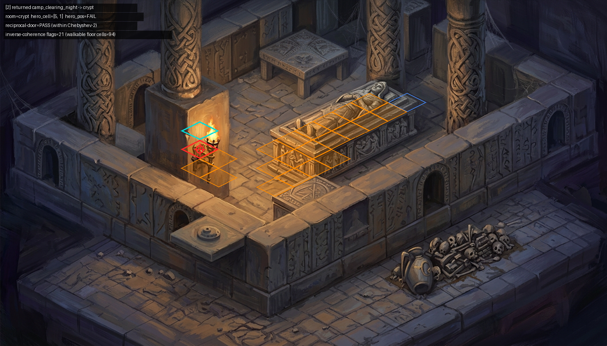
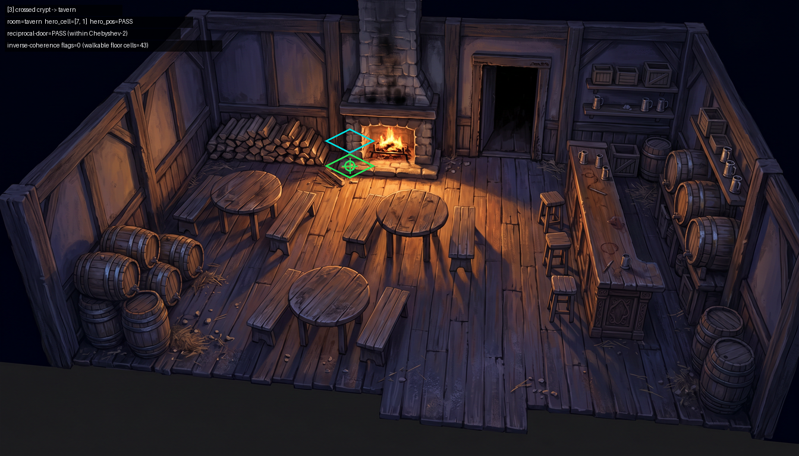
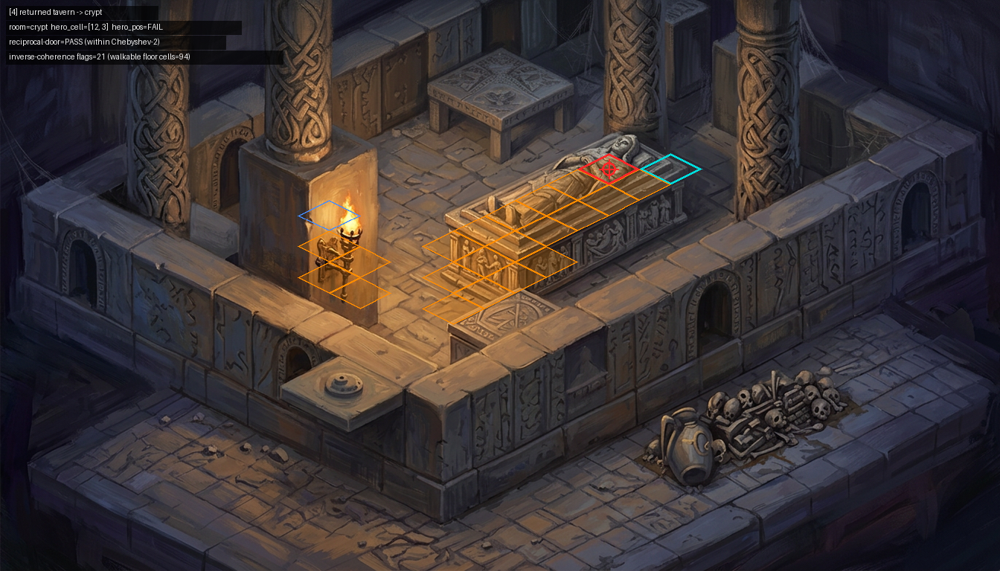

#1540 · M-ALIGN · overall CLEAN% 87.9%
· hub crypt
| room | plate | hero-pos pass | furniture flags / floor cells | CLEAN% |
|---|---|---|---|---|
| crypt | resolved | 1/1 | 21 / 94 | 77.9% |
| camp_clearing_night | resolved | 1/1 | 13 / 141 | 90.8% |
| tavern | resolved | 1/1 | 0 / 43 | 100.0% |



hero stands on cell [5, 1] the plate painted an object onto (inverse-coherence flag) — actor-inside-the-object


hero stands on cell [12, 3] the plate painted an object onto (inverse-coherence flag) — actor-inside-the-object